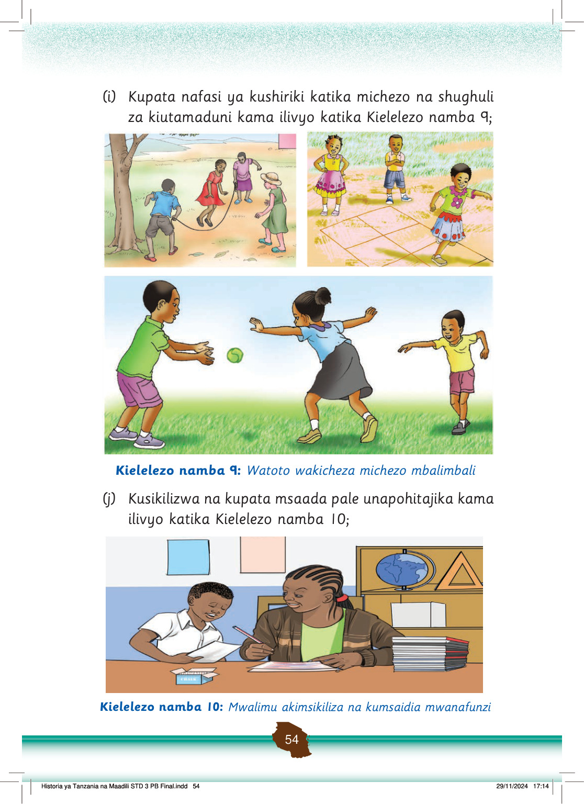

(k)
Kulindwa dhidi ya ukatili, udhalilishaji na unyanyasaji wa aina yoyote; na
(l)
Kutoa taarifa iwapo atatendewa vitendo vya ukatili, udhalilishaji na unyanyasaji na wazazi, walezi au mtu yeyote unayemwamini.
Pia, anaweza kutoa taarifa kwa walimu au vyombo vya usalama kama vile polisi au ofisi za kata, kijiji au mtaa kama inavyoonekana katika Kielelezo namba 11.
Mtoto anatoa taarifa kwa askari polisi akiwa ofisini. Anaeleza jambo kwa kuonyesha kwa mkono.
Kielelezo namba 11: Mtoto akitoa taarifa kituo cha polisi
Kuna vitendo vinavyofanyika katika mazingira ya shule na nyumbani ambavyo ni kinyume na haki za mtoto.
Mtoto ana haki ya kulindwa dhidi ya ukatili, udhalilishaji na unyanyasaji wa aina yoyote.
Mtoto ana haki ya kusema, kutoa taarifa na kupigania haki zake mwenyewe anapotendewa vitendo vilivyo kinyume na haki zake.
Kazi za kufanya namba 8
Chunguza na andika vitendo ambavyo ni kinyume na haki za mtoto vinavyofanyika maeneo ya shuleni na nyumbani.